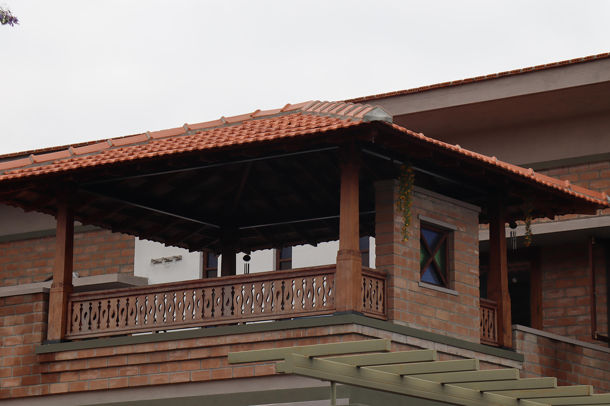

Materials
Materials
This article is a clone from the original GoodEarth Connect catalog. View the original post at:
Wood ↗
Wood
A versatile building material
Wood
A versatile building material
GoodEarth – September 15, 2020

There’s more to Wood than being just a sustainable building material Wood finds multiple applications as a building material in GoodEarth projects. Apart from Doors and Windows, wood is used to construct staircases, balconies, floors and a large number of interesting openings with a variety of designs. A strong visual signature in all GoodEarth projects are the balconies made from wooden pillars and rafters crafted by traditional carpenters.The woodworking techniques used by the carpenters reveal the raw beauty of the material, showcasing its myriad colours and textures. Their intricate craft enhances and elevates the visual experience.

The human factor in wood
Recent scientific studies have found that people living in an environment with a larger quantum of wood experience immense health benefits including low stress levels and better heart rates. A focussed Canadian study has demonstrated that the colour and texture of wood elicit feelings of warmth, comfort, relaxation along with emotive states that reduce stress and anxiety. Wood also has the ability to moderate humidity indoors.Recent scientific studies have found that people living in an environment with a larger quantum of wood experience immense health benefits including low stress levels and better heart rates. A focussed Canadian study has demonstrated that the colour and texture of wood elicit feelings of warmth, comfort, relaxation along with emotive states that reduce stress and anxiety. Wood also has the ability to moderate humidity indoors.

Why we need to gravitate towards wood
There has been a raging debate on the environmental friendliness of using wood as a building material. The metal and plastic industry has lobbied against using wood for construction, citing cutting of trees as harmful to the environment. This notion has taken deep roots in the perception of the general public. On the contrary, thorough scientific studies have revealed that wood is more environmentally friendly compared to metal, concrete or plastic even after taking into consideration energy consumption in growing, felling and end-use.This is because wood grows out of renewable sources of energy, sunlight and rain while requiring less energy intense processes in its application. Wood by and large is recyclable and creates large scale employment opportunities for farmers and craftsmen at the grassroots.On a global scale we need to focus on sustainable agro forestry to ensure that wood becomes available as a primary building material. A timber centric “green economy” can be a reality and is possible. Apart from direct timber benefits, trees balance the ecology by sinking carbon, retaining moisture, controlling soil erosion, reducing evaporation from the ground and providing shelter and food to a large number of insects, birds and fauna while they stand on earth. Tree roots penetrate the deeper layers of soil and allow rain water to percolate deep into the sub-soil. Many timber species provide food for human consumption while others provide fodder for cattle. Many of them have medicinal applications that cannot be duplicated by modern chemistry processes.
In short, an intelligent application of wood as a building material coupled with sustainable agro forestry practices to grow timber is the way forward for a sustainable and equitable future.